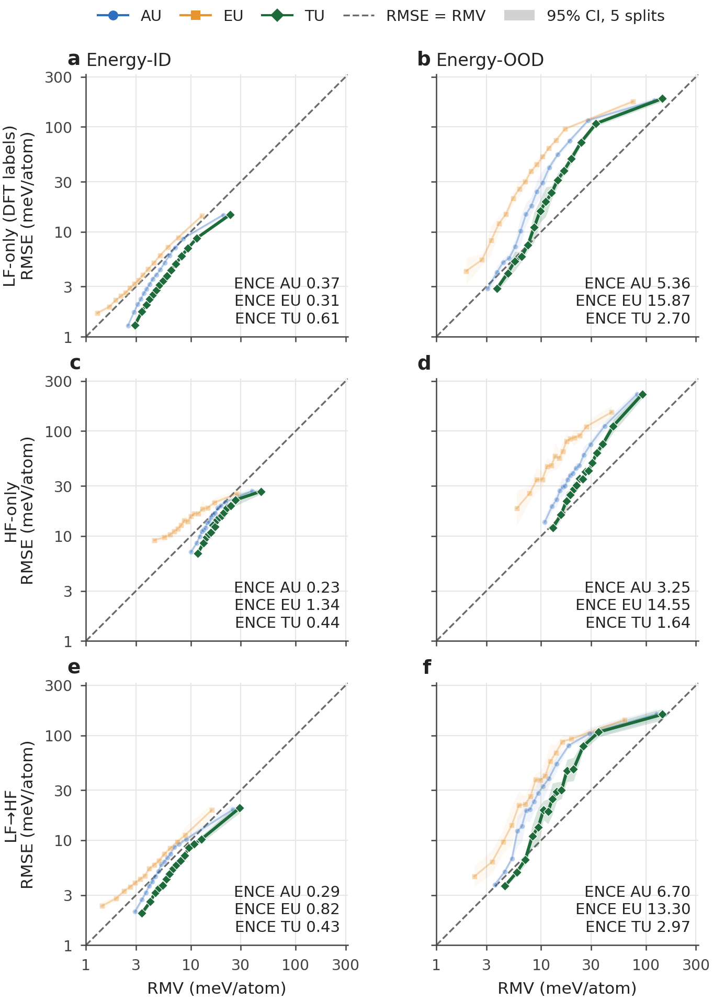
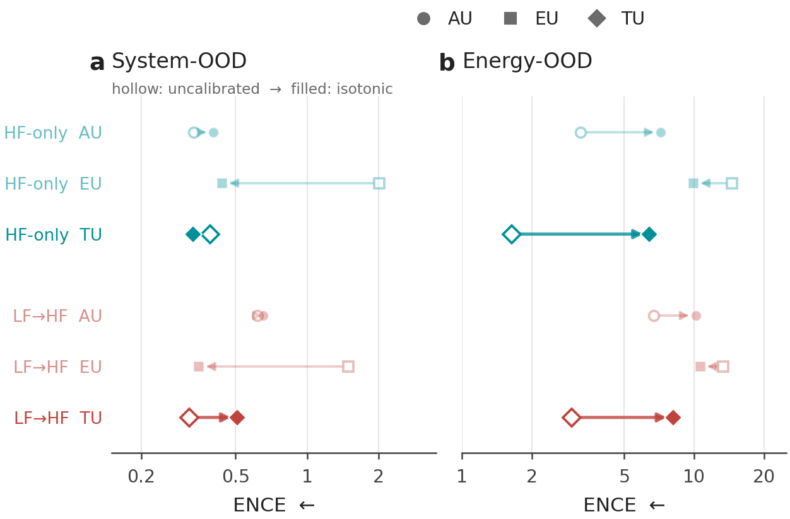
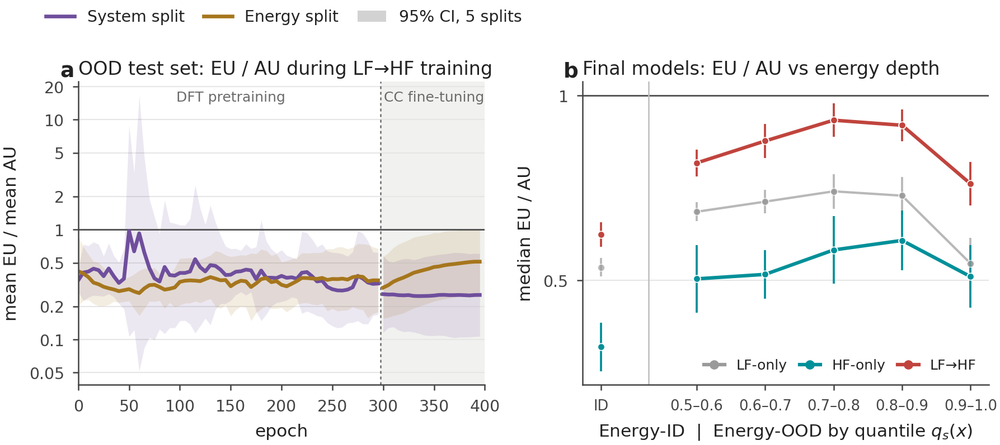
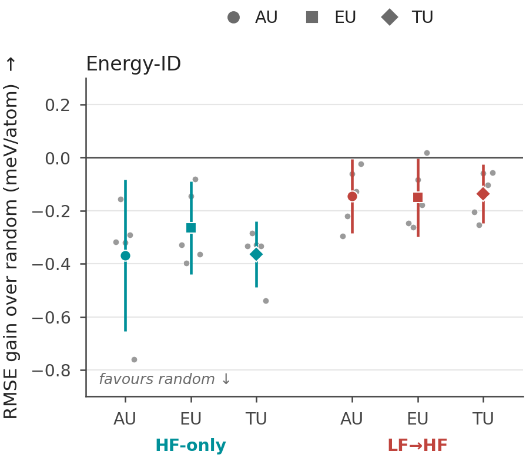
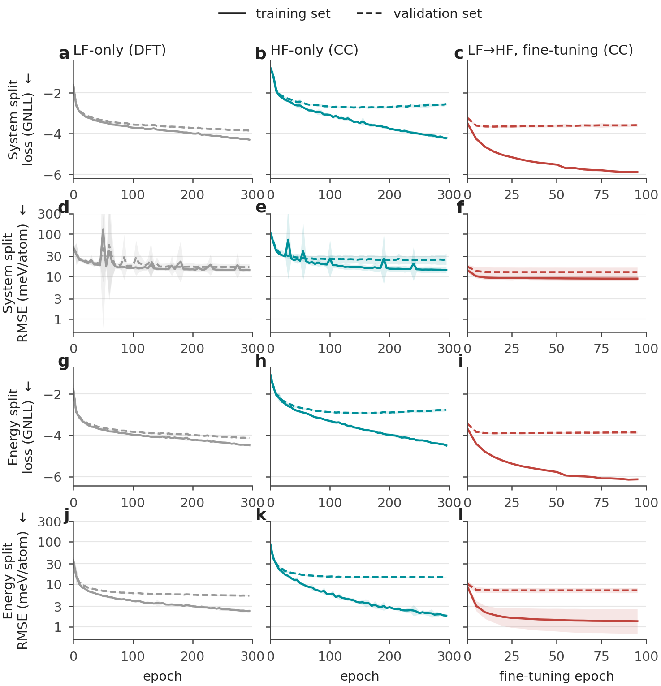

Labels are exact quantum-chemistry energies: "aleatoric" here means configuration difficulty, not noise. MACE: Batatia et al., NeurIPS 2022.
Experimental setup
Two recipes · two kinds of novelty · uncertainty scored on ranking (AUSE) and calibration (ENCE)
Data
ANI-1x: small organic molecules, each in many shapes
Per split: 50k cheap (DFT) + 5k accurate (CCSD(T)) energy labels
Energies only, no forces
Two recipes
HF-only: accurate labels only, from scratch
LF→HF: pretrain on cheap labels, then fine-tune on accurate ones
Same architecture, 10-model ensembles, 5 data splits
Test sets
In domain (ID): new shapes of training molecules
System shift: molecules never seen
Energy shift: trained on low-energy shapes, tested on high-energy
RQ1At the end of training, is the uncertainty better?
RQ2Does the kind of novelty matter?
RQ3How does uncertainty change during training?
RQ4Is it a better guide for choosing new data?
Pretraining improves ranking, not always calibration
RQ1 · At the end of training, does pretraining give better uncertainty?
1234
1
Lower error everywheremore accurate on every test set (a)
2
Better ranking on every test setfor AU, EU and TU alike (b)
3
EU catches upfrom weakest signal to close to TU (b)
4
Calibration is mixedTU worse at high energy (c)
So: pretraining helps the model know which predictions are wrong, not always by how much.
Teal: HF-only · Red: LF→HF · ● AU ■ EU ◆ TU · left is better (RMSE = error, AUSE = ranking error, ENCE = calibration error) · bars: 95% intervals over 5 splits
Energy shift decouples ranking from calibration
RQ2 · Does the kind of novelty matter: new molecules vs higher energies?
1234
1
New molecules: ranking improvesand calibration barely changes (a)
2
Higher energies: ranking improves toolarger errors are easier to order (b)
3
But calibration breaksTU calibration error ~4–7× worse (b)
4
Recalibration does not fix ita fit in domain cannot stretch to bigger errors (backup)
So: the models know which high-energy configurations are wrong, but not by how much.
Hollow = in domain, filled = out of domain · down = better ranking, left = better calibration · numbers: TU ENCE OOD / ID
Calibration is lost during high-fidelity training
RQ3 · During training, when is calibration lost?
1234
1
On training data, all is fineranking improves, calibration stays put (a, b)
2
On test data, ranking stays goodalso after switching to accurate labels (c, e)
3
But calibration breaks in fine-tuninggood during pretraining, then much worse (d, f)
4
The culprit is AUerror bars far too small (~100× worse)
5
EU holdsstays near its pretraining level and limits the damage
So: most calibration is lost in the accurate-label stage, through AU.
Epochs 0–299: pretraining on DFT labels · shaded 300–399: fine-tuning on CC labels · purple: system split, brown: energy split · bands: 95% over 5 splits
Pretraining speeds up both gain and loss
RQ3 · Same question, comparing the two recipes on the accurate-label stage
1234
1
Pretraining ranks better at oncefrom the first accurate-label epoch (a, b)
2
Then both recipes level offranking settles during training
3
Calibration breaks fasterAU ENCE ≈80 / 200 after 100 epochs, vs ≈14 / 70 after 300 from scratch (c, d)
4
Ranking and calibration decoupleone can improve while the other gets worse
In practice: select checkpoints by watching calibration too, not only the loss, ideally on shifted data.
x axis: epochs on accurate (CC) labels only · teal starts from scratch, red from the pretrained model · OOD test sets
Why do the error bars shrink?
A plausible mechanism (our interpretation)
1
AU learns from training errorseach variance head is fitted to its own squared training residuals
2
Those errors shrink, unseen ones lessscarce accurate data are fitted closely
3
Small error bars carry overoverconfident on new data; a known pitfall of mean–variance training
So: with exact labels, AU measures in-sample difficulty, not irreducible noise.
Schematic, not data. Nix & Weigend 1994; Seitzer et al., ICLR 2022.
Pretrained uncertainty is a better acquisition function
RQ4 · Is uncertainty a better guide for choosing which data to label?
1234
1
Uncertainty beats randomfor both recipes (a)
2
Pretraining gives a larger gain2.3–2.5 vs 0.8–1.6 meV/atom (a)
3
…from a better startalready more accurate before acquisition (≈59 vs ≈75 meV/atom)
4
Same kind of data pickedmostly high-energy configurations (b)
So: pretrained uncertainty is the better guide to which simulation to run next.
One round: add 500 of 2,500 high-energy configurations, chosen by uncertainty or at random, retrain, test on the held-out half · a: error drop over random (higher is better), grey dots = splits
Take-home messages
Uncertainty in multi-fidelity models is not a static property
1
Pretraining improves accuracy and rankingfor every signal, and EU becomes a strong ranker
2
…but not necessarily calibrationenergy extrapolation: known which, not by how much
3
Calibration is lost in accurate-label trainingfaster after pretraining; AU turns overconfident, EU mitigates
4
Better acquisition after pretraininglarger gain from uncertainty-guided data selection
In practice
Score ranking and calibration separately
Monitor held-out calibration during training; use it to select checkpoints
Be careful with AU after training on scarce accurate data
Validate in-domain recalibration before using it under extrapolation
THANK YOU
Questions?
Code & splits: github.com/matteotolloso/mace
Contact: matteo.tolloso@phd.unipi.it
Matteo Tolloso · Davide Bacciu · Luigi Bonati University of Pisa · Italian Institute of Technology
Backup
Reliability diagrams, energy split

Rows: LF-only (DFT labels), HF-only, LF→HF. Columns: Energy-ID, Energy-OOD. 15 equal-count bins; corner values: geometric-mean ENCE over five splits.
In domain TU lies on or slightly below the diagonal (conservative); on Energy-OOD most bins lie above it (overconfident), EU most of all.
In-domain recalibration does not repair Energy-OOD

Balance between the components: EU/AU

Acquisition in domain: no gain over random

Training and validation curves

Scope of the study
1
Energies onlyforce uncertainty is local, vector-valued and drives MD stability
2
One estimatormean–variance deep ensembles; cheaper alternatives untested; no ablation of the variance head
3
Operational decompositionno ground truth for AU and EU separately; calibration is judged on TU
4
Data accessLF→HF also sees the DFT labels; not separated from the change of fidelity
5
One dataset, controlled shifts; one acquisition roundreal workflows shift composition, size, temperature and energy at once